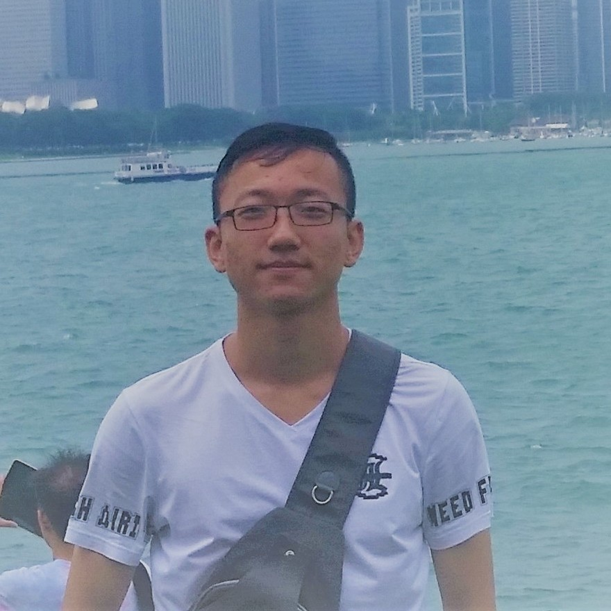
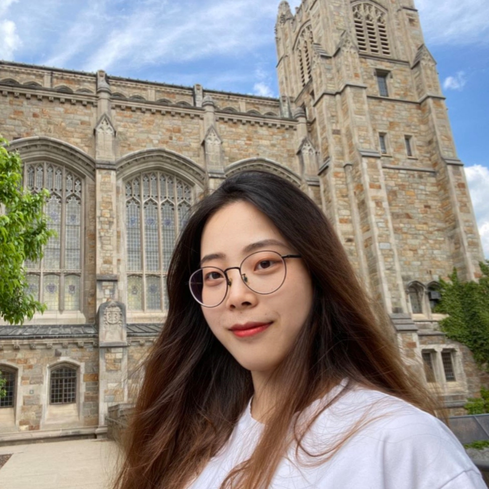
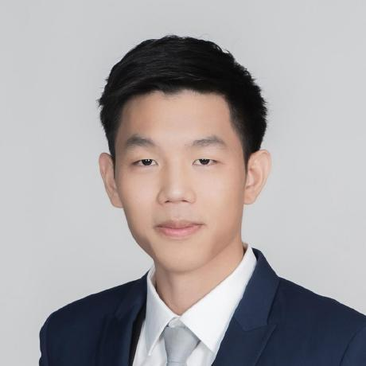
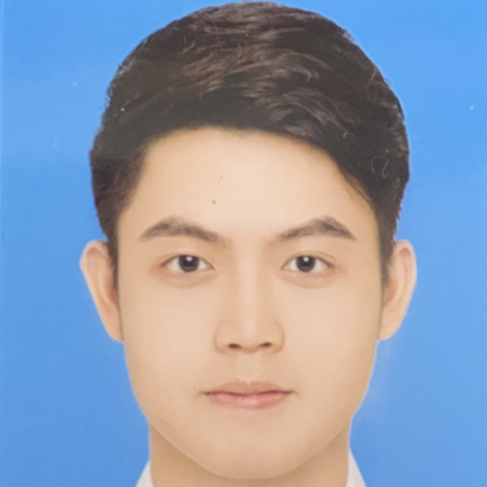
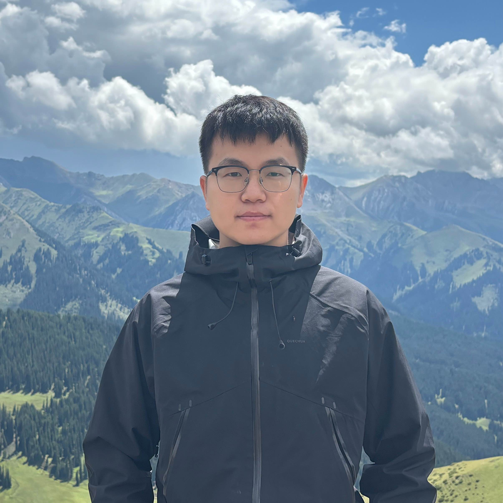
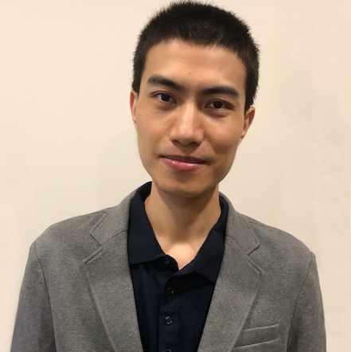

I'm very proud of these talented students.
Current Students
Ph.D. Students
|  | Shijin Duan (2020 –) |
|  | Tong Zhou (2021 –) |
|  | Nuntipat Narkthong (2023 –) |
|  | Jiaxing He (2024 –) |
|  | Yan Wang (2024 –) |
MS Students
MS students are welcome to contact and join!
Undergraduate Students
Undergraduate students are welcome to contact and join!
Former Students
PhD Students
|  | Dr. Yukui Luo (2019 –2023) |
MS Students
Quanjiang Long (2023-2024, –> PhD student at Fordham University)
Shihan Zhao (2023 - 2024)
Ziyu Liu (2022-2024)
Mariano Marufo da Silva (2022, –> Digital Design Engineer at Eta Wireless)
Wenhao Wang (2019-2021)
Yuheng Zhang (2021)
Shijin Duan (2020, –> PhD student at Northeastern)
Mike Mishal (2018-2019, –> Microsoft Technical Trainer)
Francesca Pistilli (2018-2019, –> PhD Student at Politecnico di Torino)
Marco Montagna (2018-2019, –> CPU Engineer at Arm)
Giorgio Bonomo (2018-2019, –> PhD student at ETH Zurich)
Undergraduate Students
Augustine Nguyen (2022-2022)
Tsu Wei Sung (2022-2022)
Denny Tapia (2018-2019)
Jonathan Diaz (2018-2019)
Thor Hawist (2018-2019)
Zdravko Raseta (2018-2019)